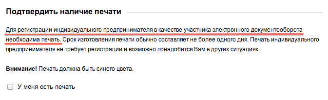

Категорически не могу смотреть видео, в котором звук рассинхронизирован. Любое, даже самое клевое. Если движения губ не совпадают со звуковой дорожкой, то все, пиздец, выключаю сразу.
Эта статья была написана год назад, но я прочитал ее только после того, как провел сегодня 5 часов в УФМС. Провел, конечно, не зря. Теперь, например, я знаю, что "установленный образец"—это анкета, распечатанная на двух сторонах одного листа, а не на двух разных страницах, так что мою анкету "неустановленного образца" у меня принять не могут.
И вот после прочтения вышеупомянутой статьи у меня дилемма: встать завтра в 6:30 и поехать через пол города в ЕЦД, чтобы взять талончик и провести время с комфортом (но, возможно, снова не подать документы), или же встать завтра в 6:30 и поехать в тот же районный УФМС, чтобы простоять часа полтора на улице (но зато гарантированно подать документы еще через пару часов ожидания)? Непросто это.

Как всегда :) Для тех, кто не в курсе: ИП может работать без печати. Поэтому у меня, например, печати нет и не будет, правда теперь не будет и электронного документооборота :)


Картинки я и так почти все уже смотрю в нативном тумблере (который, к слову, очень даже), кого-то можно будет просматривать через твиттер, но вот что делать с отдельными сайтами и блогами в ЖЖ пока непонятно :(